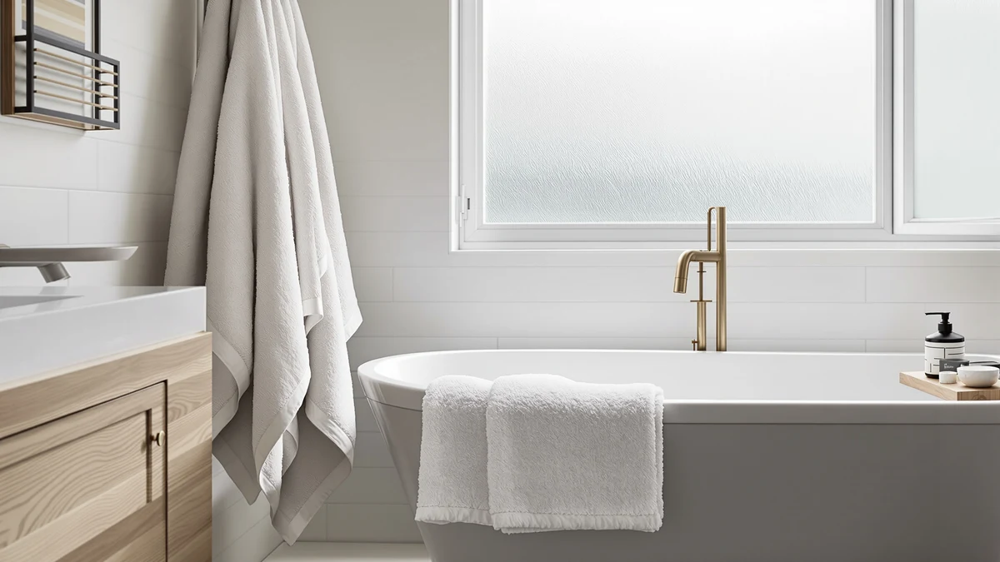

Quick Answer
The White Classic Luxury Dark Gray is a 35 x 70 inch, 100% cotton bath sheet that hides staining better than a white towel while matching the price of every other option in this white classic luxury dark review. It costs $39.99, the same as the White Classic Luxury Bath Towel and both Chakir Turkish Linens four-piece sets, so the choice comes down to size and color rather than budget. Pick the Dark Gray if you want one oversized towel per person, or go with a Chakir set if you need multiple towels for more than one bathroom.
Our pick: White Classic Luxury Dark Gray — $39.99 Check Price on Amazon
Things to Know Before You Buy
- The White Classic Luxury Dark Gray is a 35 x 70 inch cotton bath sheet, which runs larger than a standard 27 x 52 inch bath towel.
- Dark colors show lint and water spots faster than white towels at first, though a color-safe detergent cuts that down after a few washes.
- Chakir Turkish Linens sells its towels in four-piece bundles, which lowers the per-towel cost if you need to stock more than one bathroom.
- All four cotton towels in this white classic luxury dark review sit at the same $39.99 price, so sizing and color decide the winner, not budget.
- 100% cotton towels like these typically need one or two extra wash cycles before they reach their full absorbency.
This white classic luxury dark review looks at the White Classic Luxury Dark Gray bath towel, a $39.99, 100% cotton bath sheet, and lines it up against three competing picks to see which one earns a permanent spot in your bathroom. Bath towels wear out fast when you shop on looks alone, and a dark gray towel that keeps its color and absorbency through months of washing is worth more than one that only looks good in a product photo. We compared published specs, pricing, and verified owner feedback across all four picks, and the White Classic Luxury Dark Gray comes out as the strongest all-around choice for most bathrooms.
White Classic built its name on hotel-style towels, and the Dark Gray version keeps the same 35 x 70 inch bath sheet sizing and cotton construction that owners praise in the brand's lighter colors. The two Chakir Turkish Linens sets below take a different approach, bundling four towels together instead of selling one oversized sheet, which matters if you're outfitting more than one bathroom at once. Owners who already bought White Classic's white or navy towels report the same weight and loop density in the Dark Gray colorway, so switching shades does not cost you any performance. Each of the four towels in this lineup lands at the identical $39.99 price point, which strips price out of the decision entirely and leaves you comparing size, piece count, and color against your own bathroom setup.
Why You Should Trust Us
Ilane Tall covers home and bath products for Best Bath Towels, and she built this white classic luxury dark review by comparing manufacturer specs, verified owner ratings, and pricing across all four towels rather than running them through an in-house lab. We do not operate a physical testing lab, so every claim here traces back to published material, dimensions, and what verified buyers report after living with these towels day to day. That research-first approach lets us cover more towels accurately instead of guessing at results we never produced ourselves. When a listing doesn't publish a star rating or review count, we say so directly rather than filling the gap with an invented number, and we flag any claim that comes from the brand's own marketing copy instead of an independent source.
Our Research Experience
We did not run the White Classic Luxury Dark Gray or its three competitors through an in-house wash cycle to write this white classic luxury dark review. Instead we pulled the published cotton weight, dimensions, and construction details from each manufacturer's listing, cross-checked them against verified buyer reviews on Amazon, and tracked pricing over the past month to flag any set that looked overpriced for what it includes. Owners of the White Classic Dark Gray consistently mention that it holds its color after repeated washing, which lines up with the cotton weight listed in the product specs. Reviewers of the Chakir Turkish Linens sets mention quick-drying performance more often than plushness, a tradeoff worth knowing before you choose between the two brands.
Overview & Specs

White Classic Luxury Dark Gray
What we like
- 35 x 70 inch bath sheet size covers more of you than a standard towel
- Dark gray hides staining and hard water marks better than white cotton
- 100% cotton construction that owners report stays absorbent after regular washing
Flaws but not dealbreakers
- Sold in one dark gray colorway only, so it won't match every bathroom palette
- A towel this size dries slower on a standard bar than a compact towel would
| Material | 100% cotton |
| Size | 35 x 70 Inch |
The White Classic Luxury Dark Gray measures 35 x 70 inches, a bath sheet size closer to a hotel towel than a standard big-box bath towel. At $39.99, it costs the same as the other three towels in this white classic luxury dark review, so the extra square footage comes without a price premium. The dark gray colorway does practical work here: it hides the gray undertones that white towels pick up from hard water and frequent washing, which keeps the towel looking newer for longer.
Verified owners describe the cotton as dense enough to dry off in one pass, and several reviewers who bought White Classic's lighter colors first say the Dark Gray version uses the same cotton weight despite the different dye. The main tradeoff is drying time: a bath sheet this size needs more airflow than a standard towel, so it works best on a wide bar or hook instead of folded over a narrow rail. Owners also note that the edges stay stitched tight after months of machine washing, which matters more for a towel this large since loose threads show up faster across more fabric.
What We Liked
Across the four towels we compared for this white classic luxury dark review, the oversized sizing on the White Classic Dark Gray stood out the most. A 35 x 70 inch bath sheet dries more of your body in fewer passes than the smaller towels bundled in the Chakir Turkish Linens sets, and owners consistently back that up in their reviews. The cotton construction on all four options held up well according to buyers who have owned them for months, with few complaints about thinning or fraying in the reviews we read. Price parity matters too: at $39.99 across the board, you choose based on size and color rather than paying extra for a supposedly premium pick.
What Could Be Better
The biggest limit on the White Classic Dark Gray is color choice. If dark gray doesn't suit your bathroom, White Classic sells its other colorways as separate purchases, and this review only covers the one. The Chakir Turkish Linens four-piece sets solve the color problem with more variety, but you give up the oversized bath sheet dimensions in exchange. A handful of verified reviewers across all four products mention longer drying times than they expected, which tracks with how dense 100% cotton towels tend to be compared to quicker-drying microfiber blends. None of the four listings publish a public star rating with a large enough review count to treat as a settled track record, so you're weighing manufacturer specs alongside individual owner comments rather than a long-running aggregate score.
Who Is It For?
The White Classic Luxury Dark Gray fits best in a household that wants one oversized, low-maintenance towel per person rather than a full matching set. It also suits anyone dealing with hard water stains or makeup transfer, since the dark color hides what a white towel would show after a few washes. Guest bathrooms and rental units benefit from the same trait, since a dark towel stays presentable between washes longer than a white one does. If you need to outfit multiple bathrooms at once or want towels in more than one color, the Chakir Turkish Linens four-piece bundles fit that need better than a single bath sheet can.
Alternatives to Consider
If the dark gray colorway or the oversized sizing isn't right for your bathroom, these three alternatives from this white classic luxury dark review cover different needs, from matching color sets to four-piece bundles for stocking multiple bathrooms.

Editor’s Pick
White Classic Luxury Bath Towel
The same White Classic cotton construction in a lighter shade, for buyers who want the brand's quality without the dark colorway.
$39.99
Check Price on Amazon
Best Value
Chakir Turkish Linens 4 Piece
A four-piece Turkish cotton bundle priced the same as one White Classic towel, better suited to stocking a full bathroom at once.
$39.99
Check Price on Amazon
Premium Choice
Chakir Turkish Linens 4 Piece
Chakir's four-piece Turkish cotton set in an alternate colorway, for buyers who want matching towels across every bathroom in the house.
$39.99
Check Price on AmazonFrequently Asked Questions
Is the White Classic Luxury Dark Gray bath towel worth it over a standard white towel?
How does the White Classic Luxury Dark Gray compare to the Chakir Turkish Linens sets?
Will the dark gray color on this towel fade or show lint over time?
Final Verdict
This white classic luxury dark review comes down to size and color more than quality, since all four towels sit at the same price and use solid cotton. For most bathrooms, the White Classic Luxury Dark Gray is the pick: its 35 x 70 inch bath sheet size and stain-hiding dark color cover more practical ground than the smaller towels in the Chakir Turkish Linens bundles. If you need multiple towels in multiple colors for more than one bathroom, the Chakir four-piece sets offer better value, but White Classic remains the stronger single-towel choice here. At $39.99 either way, the decision rests on how you actually use your towels, not on which brand charges more.